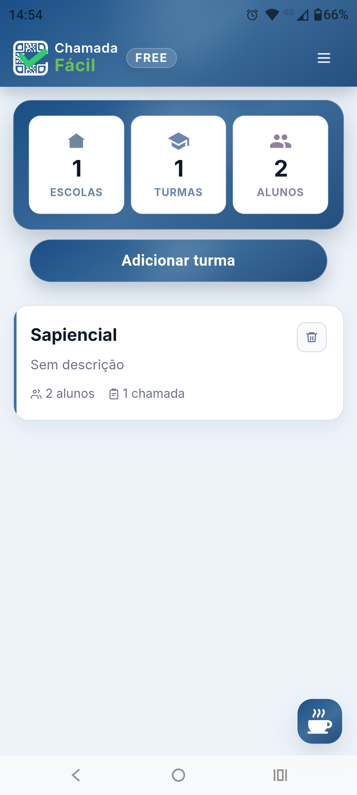
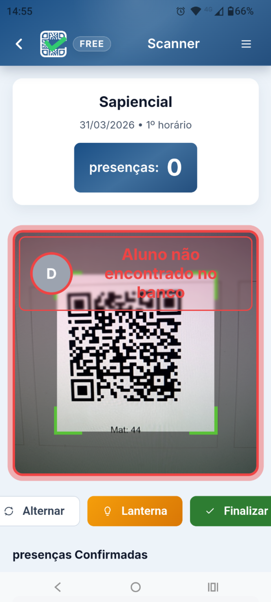
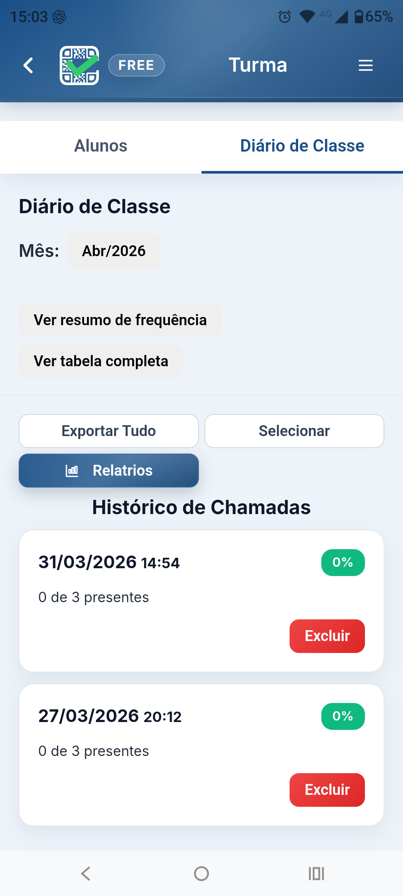

Agilize a chamada dos alunos com QR Code e registre a presença em segundos, mesmo sem internet na sala de aula. Use no Android ou direto na versão web.

Do cadastro à chamada, o processo foi pensado para ser simples, rápido e prático no dia a dia do professor.
Cadastre sua turma e adicione os alunos no app.
Crie os QR Codes dos alunos para agilizar a chamada.
Escaneie os códigos e registre a presença em segundos, mesmo offline.
O scanner foi pensado para uso rápido em sala de aula. Basta apontar a câmera para o QR Code do aluno e registrar a presença de forma simples, visual e imediata.


Consulte o diário de classe, acompanhe o histórico das chamadas e mantenha as informações da turma organizadas em um só lugar.
A versão Free foi pensada para uso imediato, com foco no essencial para a chamada escolar.
Reduza o tempo gasto com chamada no dia a dia.
Fácil de usar para professores, sem complicação.
Funciona sem depender de internet dentro da sala de aula.
Turma, alunos e histórico reunidos em um só lugar.
As versões Lite e Pro chegarão com novos recursos e evoluções do Chamada Fácil.